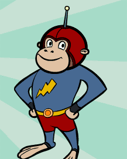

Captain Huggyface, otherwise known as Bob, Bobby, or Robert (perhaps Bob Botsford if he has been adopted into the family like Becky), is WordGirl's sidekick
Captain Huggyface has no super powers, and often has to take the bus home when WordGirl forgets that he can't fly
Below are several facts about Captain Huggyface:
To learn more about Captain Huggyface CLICK HERE